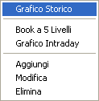
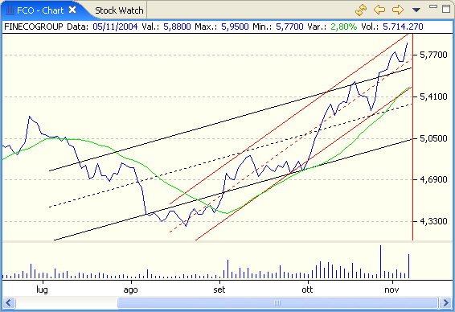
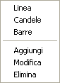

Il Grafico Storico viene aperto mediante il menù che si apre con il tasto destro del mouse all'interno della finestra Stock Watch.

La finestra è divisa in zone ciascuna delle quale è in grado di visualizzare uno o più grafici o indicatori. Le impostazioni predefinite visualizzano il grafico del prezzo di chiusura nella parte superiore e il volume di scambi nella parte inferiore.

Cliccando con il tasto destro del mouse sul grafico si apre un menù dal quale è possibile selezionare il modo di visualizzazione del grafico e degli indicatori di analisi tecnica.

La barra degli strumenti consente di aggiornare il grafico con gli ultimi dati dal provider selezionato, visualizzare il grafico precedente o quello successivo secondo l'ordine in cui sono stati inseriti nella finestra Stock Watch e di selezionare il periodo da visualizzare.
Selezionando il pulsante con la freccia in basso si apre un menù dal quale è possibile selezionare il periodo da visualizzare.

I calcoli degli indicatori di analisi tecnica vengono effettuati solamente sulla porzione di dati selezionati tramite questo menù.